Ekya Schools
A chain of K-12 educational institutions. I supported integrated marketing and communication initiatives across digital, print, and on-ground channels to strengthen parent engagement, event participation, and brand visibility.
Across a school network, communication has to work everywhere at once: on a newspaper page a parent reads at breakfast, on a ticket handed out at an event, and in a post scrolling past on a phone. My role was to keep that message coherent across every channel.
Print & offline communication
Tangible touchpoints that meet parents and the wider community in the physical world, designed and written to feel unmistakably part of one school brand.
Newspaper insert
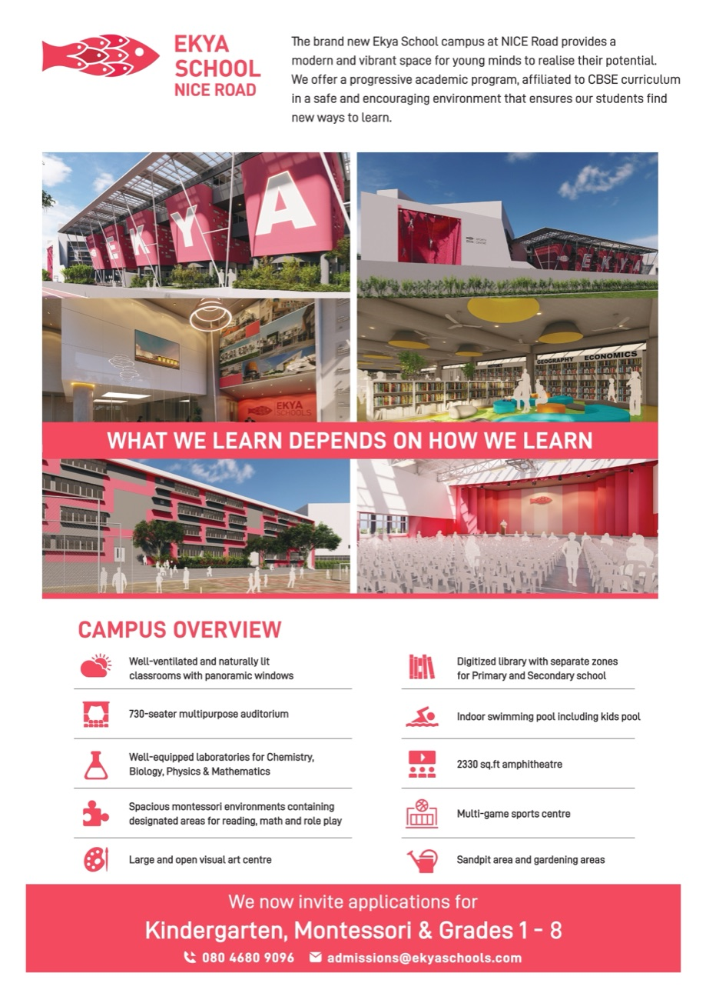
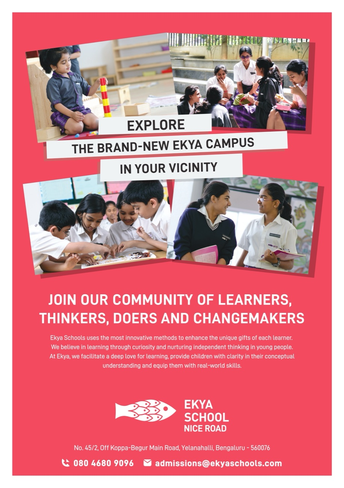
Campus insert
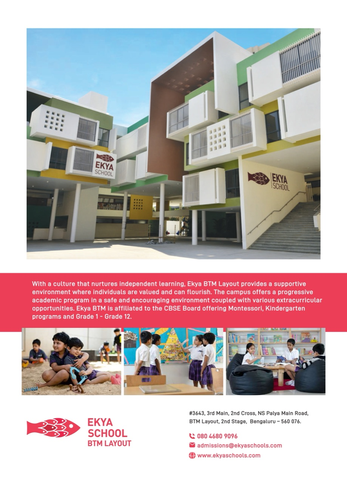
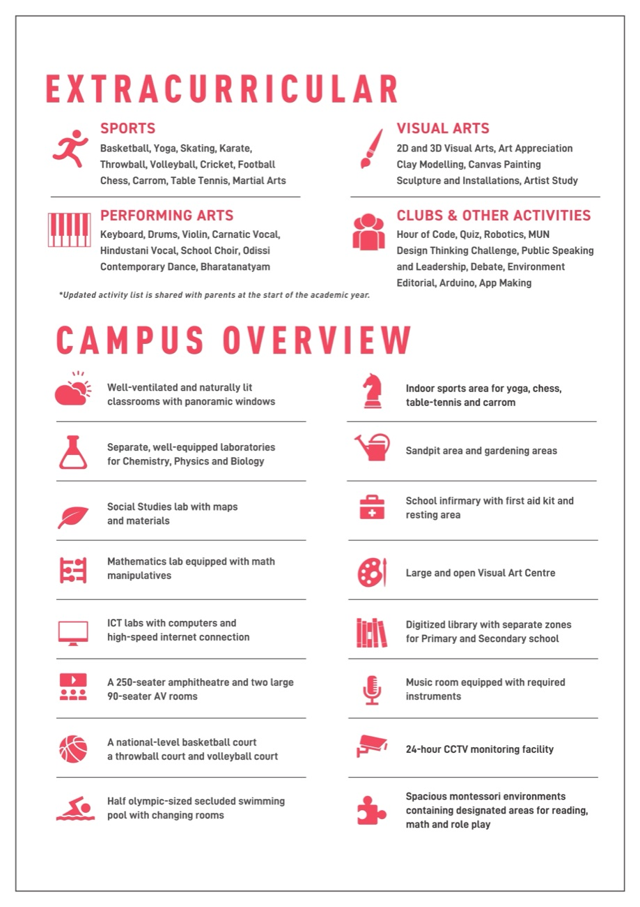
Brochure
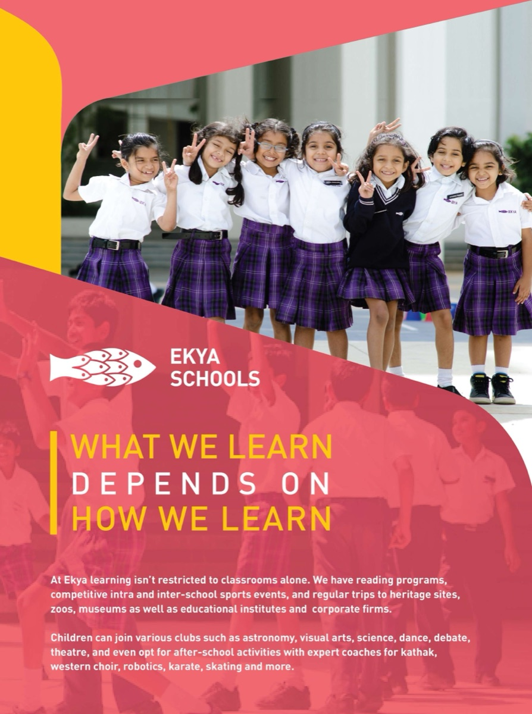
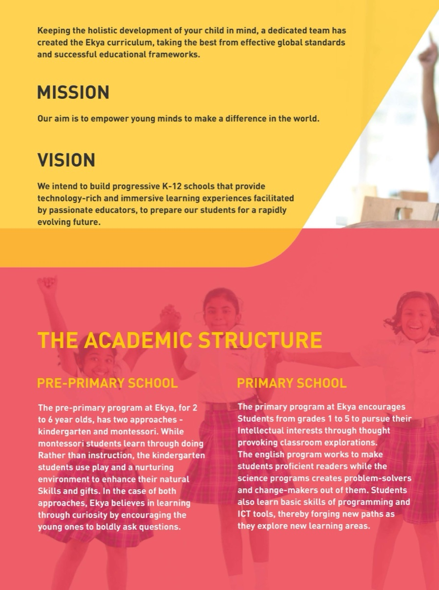
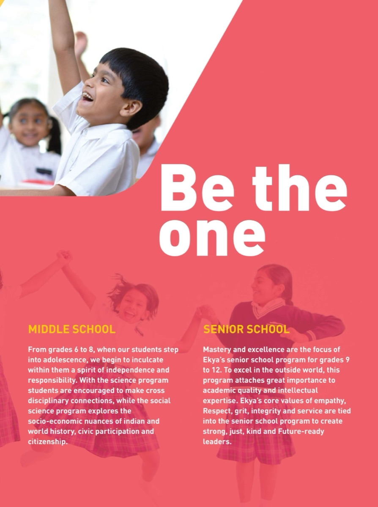
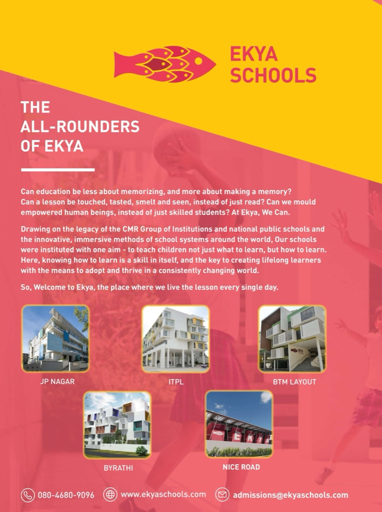
Booth
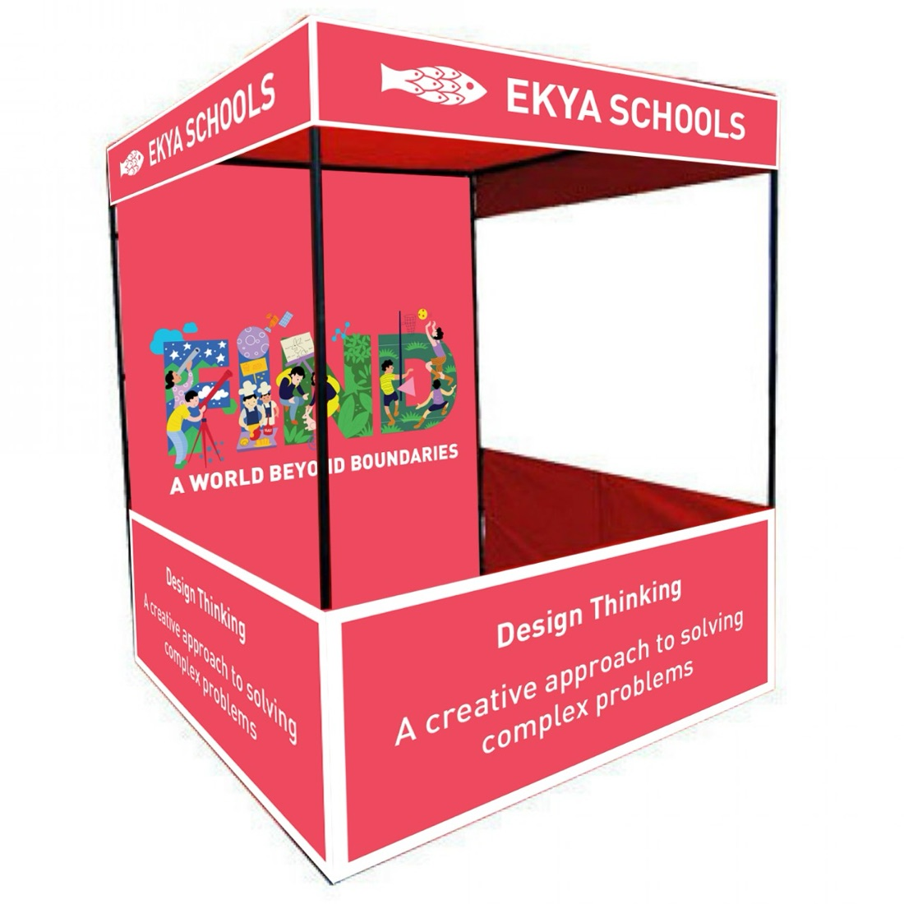
Entry ticket
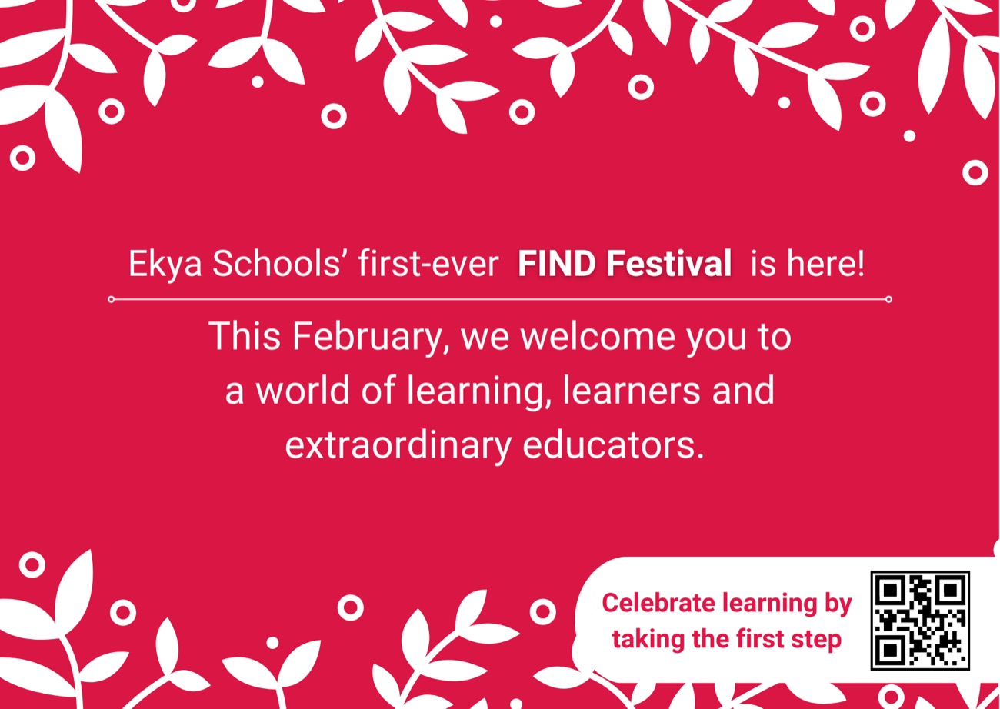
Digital & stakeholder communication
The online half of the same story: a website landing page and social content that carried the brand across platforms (LinkedIn, Instagram, and X), each tuned to its audience while staying on message.
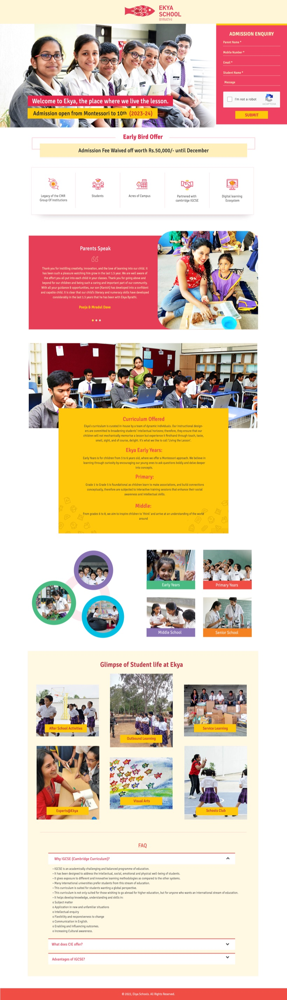
The takeaway
Integrated communication is less about any single asset and more about the through-line: the same voice, promise, and identity showing up consistently whether a parent meets the school in print, online, or in person.